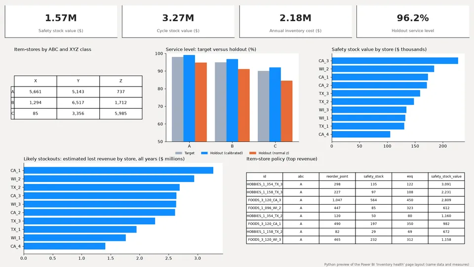

(full preview on GitHub)Walmart M5: Demand Forecasting and Inventory Policy
How much stock should 10 Walmart stores hold for 3,049 products?
- Data
- 46.8 million item-store-day rows: 30,490 daily sales series from Walmart's M5 data, 2011 to 2016.
- Method
- One global LightGBM model (21 features), a rolling-origin backtest over three 28-day folds, and safety stock set from the empirical error distribution.
- Result
- WRMSSE of 0.625 against 0.847 for seasonal naive, 26% lower. Calibrated safety stock reached 99% / 97% / 92% service for class A / B / C items, where the textbook formula missed every target.